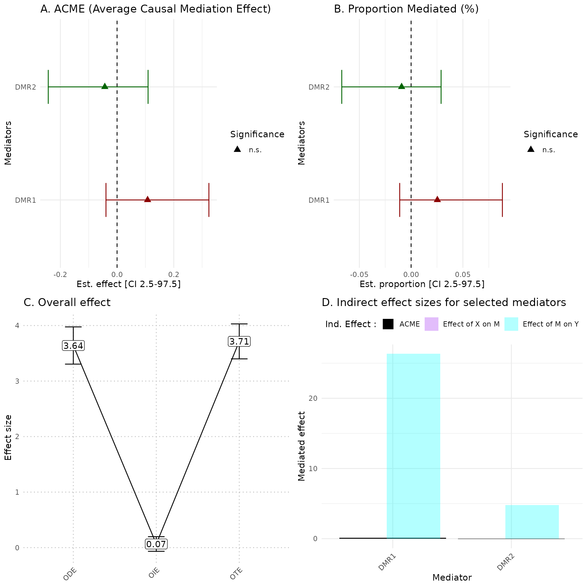

hdmax2 application
Florence Pittion, Magali Richard, Olivier Francois
January, 2024
hdmax2.RmdIntroduction
When a statistical association is observed between an external exposure () and an individual outcome (), one or more intermediate variables (M) (such as gene expression or epigenetic changes) may mediate this effect. Identifying and assessing the mediating role of these variables in the effect of on is crucial for deciphering underlying causal mechanisms in epidemiological and clinical research. This process, known as mediation analysis, involves studying mediator variables to define the causal structure between and . The mediated effect, termed the indirect effect, is equal to the effect of on mediated through (M), to distinguish from the direct effect of on unexplained by (M).
The R package hdmax2 is dedicated to high-dimensional
mediation analyses. For mediation analyses, the necessary data includes
one (or more) exposure variable(s), a matrix of potential mediators, and
an outcome variable.
The term “high dimensional” refers to the large quantity of potential mediators among which we seek to identify the actual mediators.
The fundamental concept behind HDMAX2 methods is to use a latent factor mixed regression model for estimating unobserved latent factors while conducting high-dimensional association analysis. HDMAX2 also implements a novel procedure known as the max-squared test to assess the statistical significance of potential mediators. Finally, HDMAX2 enables the calculation of an overall indirect effect from a single model that includes all mediators simultaneously. This approach therefore takes into account correlations between mediators.
The hdmax2 program has been enriched with numerous
features, including the ability to manage various types of variables in
the exposure (continuous, binary, categorical, and multivariate), as
well as the capability to incorporate binary outcomes. This package
enables users to:
investigate associations between the variables , (M), and ,
compute the mediated effect for each potential mediator,
assess the overall indirect effect for the total model,
and visualize these results.
The package hdmax2 is designed to accept :
One or several Exposure variables consisting of univariate data, which can be continuous, binary or categorical as well as multivariate exposure. We define as the number of samples within the tested cohort. Therefore, each exposure and outcome variable consists of measurements. In the
Rlanguage, categorical variables are encoded as factor objects. The functionas.factor()can be used to encode categorical variables. The functionslevels()andordered()can be used to define the order of the modalities of categorical variables. By convention,hdmax2uses the first modality as a reference to calculate the effects associated with the other modalities of the variable, as encoded by default in statistical regression models inR.Continuous intermediary variables, denoted as M, are represented as a matrix encompassing potential mediators, such as methylome or transcriptome molecular features. The matrix M should be entered as a separated input, without missing values. The intermediary variable matrix M is of dimension , with the total number of intermediate variables.
The outcome variable, denoted as , corresponds to a vector of dimension , which supports both continuous and binary formats. Continuous and binary variables must be encoded in numeric format.
Optional covariates, , can be included as observed adjustment factors in the model. Please refer to the helper function section for insight into how to interpret the additional set of covariates.
, the number of latent factors to be estimated.
Example (simulation) : multivariate exposure and continuous outcome
For this example we use a two variables exposure (continuous and binary), a continuous outcome and two adjustment factors (age and gender).
We simulated data for 100 samples and 1000 potential mediators.
The matrix of potential mediators is an extract of real methylation data (TCGA PDAC samples).
We define the number of estimated latent factors by performing a PCA on potential mediators matrix. Cattell’s rule is applied to the eigenvalues of PCA. The scree plot criterion looks for the “elbow” in the curve and selects all components just before the line flattens out, is chosen with this procedure.
simu_data = hdmax2::simu_data
## Number of Latent factor estimation
pc <- prcomp(simu_data$M1)
plot((pc$sdev^2/sum(pc$sdev^2))[1:10],
type = "b",
xlab = 'Principal Component',
ylab = "Explained variance")
K=4 #pca conclusion : it is better to select too many factors than too fewSTEP 1: Run association studies
The run_AS function is applied:
First to estimate latent factors with algorithms.
Then to identify significant effects of exposure on potential mediators in M matrix, and significant effect of potential mediators on outcome .
And eventually to compute mediation test: max-squared test.
The run_AS function takes as inputs:
- for exposure: can be a vector, a factor with (samples) elements or a data frame with rows and 1 column if univariate or columns or different exposure variables if multivariate.
- for outcome: can be a vector or a matrix with rows and 1 column.
- M for the potential mediators: must be a matrix with rows and columns (potential mediators).
- for the number of latent factors defined earlier: must be integer.
- Adjustment factors covar can be included: must be numeric (data frame or matrix) with rows.
## multivariate Exposures (continuous + binary)
X = data.frame(X_continuous = simu_data$X_continuous, X_binary = simu_data$X_binary)
covar = cbind(simu_data$age, simu_data$gender)
covar = as.data.frame(covar)
hdmax2_step1 = hdmax2::run_AS(exposure = X ,
outcome = simu_data$Y_continuous,
M = simu_data$M2,
K = K,
covar = covar)The run_AS function provides an object containing:
- Results from the two association studies (-values, fscores or zscores),
head(hdmax2_step1$AS_1$pval)
#> cg00005740 cg00006787 cg00007032 cg00008612 cg00009871
#> 6.385434e-110 7.557479e-86 3.515170e-127 5.140365e-98 8.322935e-110
#> cg00009922
#> 7.946406e-11
head(hdmax2_step1$AS_2$pval)
#> cg00005740 cg00006787 cg00007032 cg00008612 cg00009871 cg00009922
#> 6.540743e-04 1.186044e-01 7.450322e-08 1.549392e-07 1.007703e-04 5.130813e-01
head(hdmax2_step1$max2_pvalues)
#> cg00005740 cg00006787 cg00007032 cg00008612 cg00009871 cg00009922
#> 4.278131e-07 1.406700e-02 5.550730e-15 2.400616e-14 1.015465e-08 2.632524e-01At this stage, we can use the figure below to assess two assumptions: panel A evaluates the independence of the two p-value vectors from two association studies (showing weak correlation), while panel B examines the uniformity of max2 test p-values (except for values near 0).
pval1 = hdmax2_step1$AS_1$pval
pval2 = hdmax2_step1$AS_2$pval
cor_value = cor(pval1,pval2)
p1 = ggplot(data = data.frame(x = pval1, y = pval2), aes(x = pval1, y = pval2)) +
geom_bin2d(bins = 50) +
scale_fill_gradient(low = "lightblue", high = "darkblue",
guide = guide_colorbar(title = paste("correlation\n = ",round(cor_value,3),"\n \n Count"),
title.position = "top")) +
theme_minimal() +
labs(title = "A",
x = "1srt regresssion (X->M) pvalues", y = "2nd regresssion (M->Y) pvalues")
data_hdmax2_step1 <- data.frame(pvalues = hdmax2_step1$max2_pvalues)
p2 = ggplot(data_hdmax2_step1, aes(x = pvalues)) + geom_histogram(bins = 100, color = "black", fill = "gray") + labs(title = "B", x = "Max2 test pvalues distribution")
gridExtra::grid.arrange( p1, p2, ncol = 2, top = grid::textGrob("Hypothesis verification", gp = grid::gpar(fontsize = 14, fontface = "bold")))
- Latent factors estimation matrix ( rows and columns) from first regression,
head(hdmax2_step1$AS_1$U)
#> [,1] [,2] [,3] [,4]
#> [1,] -12.585133 -1.1510431 0.3444928 0.1350501
#> [2,] 3.406759 0.5755978 -0.7455638 -0.5796212
#> [3,] 7.942628 1.7442171 -1.0279125 -0.5658921
#> [4,] 2.884806 0.8904630 -0.3638173 -0.5666794
#> [5,] -9.200969 -0.9469759 0.3270254 0.1069010
#> [6,] 14.865324 1.9505182 -1.3129179 -0.9547634run_ASfunction’s inputs,And max-squared test -values results.
head(hdmax2_step1$max2_pvalues)
#> cg00005740 cg00006787 cg00007032 cg00008612 cg00009871 cg00009922
#> 4.278131e-07 1.406700e-02 5.550730e-15 2.400616e-14 1.015465e-08 2.632524e-01Selection of a subset of mediators
max-squared -values are used in the selection of mediators for the user’s chosen method.
Numerous selection methods are available, such as FDR control. Also in the context of methylation data, it’s feasible to to identify aggregated mediator regions (AMR) based on the paired -values frome mediation test. Refer to the helper_functions vignette for assistance FDR control and AMR researching procedure.
For the example, we opted for the top ten most significant -values from the max-squared test.
## Selecting top 10 mediators
mediators_top10 = simu_data$M2[,names(sort(hdmax2_step1$max2_pvalues)[1:10])]
head(mediators_top10)
#> cg00025981 cg00075768 cg00019093 cg00066729 cg00031759 cg00084432
#> GSM1051525 1.685693 2.218030 1.557068 2.430756 1.691808 3.780360
#> GSM1051526 6.161752 5.784076 5.691395 5.489877 6.089739 8.069034
#> GSM1051527 7.679215 6.889730 7.079877 6.397163 7.563050 9.386660
#> GSM1051528 6.431278 5.836811 5.913431 5.450084 6.318493 8.108019
#> GSM1051529 2.266971 2.807172 2.098831 3.032556 2.256564 4.550265
#> GSM1051530 7.782111 7.576316 7.183111 7.398095 7.658832 10.399671
#> cg00076854 cg00007032 cg00008612 cg00022633
#> GSM1051525 1.966973 1.431224 2.318326 1.459519
#> GSM1051526 4.500903 5.076067 6.277443 5.195897
#> GSM1051527 5.262907 6.293432 7.585078 6.470071
#> GSM1051528 4.485116 5.290542 6.481324 5.401831
#> GSM1051529 2.456586 1.900969 2.779885 1.940046
#> GSM1051530 5.998859 6.406738 7.633106 6.566717STEP 2
The function estimate_effect estimate the individual
indirect effect of mediators, but also overall effects of selected
mediators.
The function estimate_effect takes as inputs, step 1
object and selected mediators matrix
from chosen selection method apply on max-squared test
-values.
hdmax2_step2 = hdmax2::estimate_effect(object = hdmax2_step1,
m = mediators_top10)The function estimate_effect use
mediation::mediate function to obtain several effects
estimation with uncertainty:
- ACME Average Causal Mediation Effect: corresponding to the indirect effect
# For first exposure variable
head(hdmax2_step2$effects$X1$ACME)
#> NULL
# For second exposure variable
head(hdmax2_step2$effects$X2$ACME)
#> NULL- PM Proportion Mediate: corresponding to the proportion of the total effect that is mediated by the mediator
# For first exposure variable
head(hdmax2_step2$effects$X_continuous$PM)
#> est CI_2.5 CI_97.5 pval feat
#> 1 0.07793461 -0.14768424 0.30034760 0.468 cg00025981
#> 2 -0.18706776 -0.27319809 -0.10068413 0.000 cg00075768
#> 3 0.14686163 -0.06269033 0.37856293 0.154 cg00019093
#> 4 -0.11709747 -0.15242776 -0.07750990 0.000 cg00066729
#> 5 0.01346451 -0.14562168 0.18337909 0.882 cg00031759
#> 6 -0.09018552 -0.13777651 -0.04434364 0.000 cg00084432
head(hdmax2_step2$effects$X_binary$PM)
#> est CI_2.5 CI_97.5 pval feat
#> 1 0.08691151 -0.12080763 0.29644228 0.432 cg00025981
#> 2 -0.19477614 -0.29052451 -0.09616481 0.000 cg00075768
#> 3 0.13953217 -0.04426333 0.35891488 0.164 cg00019093
#> 4 -0.11924912 -0.15757274 -0.08046365 0.000 cg00066729
#> 5 0.01682250 -0.16406513 0.18895125 0.854 cg00031759
#> 6 -0.09207909 -0.14035110 -0.04339033 0.000 cg00084432- TE total effect: which is equal to the sum of direct and indirect effect
# For first exposure variable
head(hdmax2_step2$effects$X_continuous$TE)
#> est CI_2.5 CI_97.5 pval feat
#> 1 -0.6079588 -0.6106614 -0.6053151 0 cg00025981
#> 2 -0.6078334 -0.6103544 -0.6050415 0 cg00075768
#> 3 -0.6079978 -0.6106669 -0.6054574 0 cg00019093
#> 4 -0.6080833 -0.6107622 -0.6053750 0 cg00066729
#> 5 -0.6079325 -0.6106565 -0.6052642 0 cg00031759
#> 6 -0.6078076 -0.6104230 -0.6052371 0 cg00084432
head(hdmax2_step2$effects$X_binary$TE)
#> est CI_2.5 CI_97.5 pval feat
#> 1 -0.6070015 -0.6090468 -0.6049175 0 cg00025981
#> 2 -0.6067137 -0.6088539 -0.6045375 0 cg00075768
#> 3 -0.6070108 -0.6091154 -0.6049133 0 cg00019093
#> 4 -0.6068201 -0.6089097 -0.6048201 0 cg00066729
#> 5 -0.6069953 -0.6090666 -0.6049249 0 cg00031759
#> 6 -0.6068186 -0.6089037 -0.6045198 0 cg00084432- ADE Average Direct Effect: which represents the unmediated effect.
# For first exposure variable
head(hdmax2_step2$effects$X_continuous$ADE)
#> est CI_2.5 CI_97.5 pval feat
#> 1 -0.5601282 -0.6990500 -0.4254862 0 cg00025981
#> 2 -0.7216112 -0.7749001 -0.6703574 0 cg00075768
#> 3 -0.5170829 -0.6449217 -0.3785875 0 cg00019093
#> 4 -0.6793718 -0.7008739 -0.6552783 0 cg00066729
#> 5 -0.5975570 -0.6973984 -0.4960193 0 cg00031759
#> 6 -0.6631018 -0.6921840 -0.6346139 0 cg00084432
head(hdmax2_step2$effects$X_binary$ADE)
#> est CI_2.5 CI_97.5 pval feat
#> 1 -0.5545354 -0.6808834 -0.4268651 0 cg00025981
#> 2 -0.7243052 -0.7838235 -0.6649691 0 cg00075768
#> 3 -0.5187455 -0.6330178 -0.3898110 0 cg00019093
#> 4 -0.6791212 -0.7021317 -0.6556569 0 cg00066729
#> 5 -0.5962429 -0.7068583 -0.4910823 0 cg00031759
#> 6 -0.6630343 -0.6919211 -0.6327212 0 cg00084432This step also compute Overall effects :
- OIE (Indirect effect): corresponding to the sum of the indirect effect associated with all mediators.
# Estimate OIE for first exposure variable
head(hdmax2_step2$effects$X_continuous$oie)
#> [1] -0.2958142 -0.1508090 -0.3900808 -0.1246276 -0.2151548 -0.1401295
# OIE median for first exposure variable
hdmax2_step2$effects$X_continuous$oie_med
#> [1] -0.1933182
# OIE standard deviation for first exposure variable
hdmax2_step2$effects$X_continuous$oie_sd
#> [1] 0.08165734- ODE (Direct Effect): corresponding to the effect of exposure variables on the outcome variable.
hdmax2_step2$effects$X_continuous$ode
#> Estimate Std. Error t value Pr(>|t|)
#> -4.138240e-01 8.050834e-02 -5.140138e+00 1.794390e-06- OTE (Total Effect): corresponding to the effect of exposure variables on the outcome variable when the mediators are included in the model.
hdmax2_step2$effects$X_continuous$ote
#> Estimate Std. Error t value Pr(>|t|)
#> -6.080365e-01 1.337064e-03 -4.547549e+02 1.856535e-157In addition, function estimate_effect estimates the
intermediary effect sizes
and
and their standard deviations.
head(hdmax2_step2$effects$X_continuous$xm)
#> Estimate Std.Error t.Value pValue feat
#> 1 4.2259065 0.009426571 448.29732 5.704808e-154 cg00025981
#> 2 1.9188493 0.009315837 205.97713 2.872086e-123 cg00075768
#> 3 3.8615528 0.009380363 411.66348 1.329727e-150 cg00019093
#> 4 0.7093047 0.007568283 93.72068 2.624847e-92 cg00066729
#> 5 4.1366585 0.012411325 333.29708 2.910289e-142 cg00031759
#> 6 1.7521157 0.017207734 101.82141 1.490810e-95 cg00084432
head(hdmax2_step2$effects$X_continuous$my)
#> Estimate Std.Error t.Value pValue feat
#> 1 -0.012063552 0.016128696 -0.7479558 4.563945e-01 cg00025981
#> 2 0.059815480 0.015016868 3.9832193 1.358342e-04 cg00075768
#> 3 -0.023244544 0.016497605 -1.4089648 1.622166e-01 cg00019093
#> 4 0.100847132 0.016982709 5.9382241 5.061150e-08 cg00066729
#> 5 -0.002496094 0.012440722 -0.2006390 8.414237e-01 cg00031759
#> 6 0.031741873 0.008358622 3.7975008 2.619181e-04 cg00084432Vizualisation of results
We propose a set of plots including:
Mediators ACME Forest plot
Mediators PM Forest plot
Comparison of ODE, OIE and OTE
Mediators effect size representation
hdmax2::plot_hdmax2(hdmax2_step2, plot_type= "all_plot")

A Estimates of indirect effect (ACME) and B proportions of mediated effect (PM) for the top 10 mediators. The effect estimate is represented by a dot and its 95% CI by the bar. Symbols correspond to the significance cut off of 5% (square for p-value , circle p-value ). Colors correspond to the sign of the effect (green for estimated effect , red for estimated effect ).
C Effect sizes of Overall Direct Effect (ODE), Overall Indirect Effect (OIE) and Overall Total Effect (OTE). Error bars correspond to standard deviation (ODE and OTE) or confidence interval (OIE).
D Indirect effect sizes for the selected mediators. Black corresponds to the ACME, violet to the effect of exposure on mediator M, and blue corresponds to the effect of mediator M on outcome .
In the plot_hdmax2 function it is possible to produce
the 4-plots set or each individual plot with plot_type
argument.
1rst Use Case : Breast cancer
tcga_brca was downloaded and processed from the Cancer
Genome Atlas TCGA-BRCA dataset (. 2019 version of the data.)
It is a list of 4 matrices : X (exposure), M (potential mediators), Y (outcome) and CF (confounding factor)) :
- X : exposure variable, a matrix of 904 rows (patients) and 1 column (her-status : positive = 1 and negative = 0)
- M : potential mediators, a matrix of 19959 rows (beta-values of CpG probes) and 904 columns (patients)
- Y : outcome variable, a matrix of 904 rows (patients) and 1 column (risk-score, a continuous variable)
- CF : confounding factor, a matrix of 904 rows (patients) and 1 column (age)
if (!(file.exists("tcga_brca.RData"))) {
url_file <- "https://zenodo.org/records/14716548/files/tcga_brca.RData?download=1"
response <- httr::GET(url_file, httr::write_disk("tcga_brca.RData", overwrite = TRUE))
if (response$status_code == 200) {
load("tcga_brca.RData")
} else {
stop("Download failed")
}
}
## Number of Latent factore estimation
pc <- prcomp(tcga_brca$M)
plot((pc$sdev^2/sum(pc$sdev^2))[1:10],
type = "b",
xlab = 'Principal Component',
ylab = "Explained variance")
K = 2 #The screeplot indicates around 2 main components in the data. STEP 1: Run association studies
The run_AS function is applied to estimate the effects of exposure on a matrix of potential mediators, and the effect of each potential mediators on outcome .We also add the age as a known counfouding factor .
hdmax2_step1 = hdmax2::run_AS(exposure = data.frame(tcga_brca$X),
outcome = as.vector(tcga_brca$Y),
M = t(tcga_brca$M),
K = K,
covar = tcga_brca$CF)max-squared test -values results.
head(hdmax2_step1$AS_1$pval)
#> cg00000292 cg00002426 cg00003994 cg00005847 cg00007981 cg00008493
#> 0.0009873141 0.7773962442 0.2813067905 0.0944946938 0.1972223151 0.0626456118
pval1 = hdmax2_step1$AS_1$pval
pval2 = hdmax2_step1$AS_2$pval
cor_value = cor(pval1,pval2)
p1 = ggplot2::ggplot(data = data.frame(x = pval1, y = pval2), aes(x = pval1, y = pval2)) +
geom_bin2d(bins = 50) +
scale_fill_gradient(low = "lightblue", high = "darkblue",
guide = guide_colorbar(title = paste("correlation\n = ",round(cor_value,3),"\n \n Count"),
title.position = "top")) +
theme_minimal() +
labs(title = "A",
x = "1srt regresssion (X->M) pvalues", y = "2nd regresssion (M->Y) pvalues")
data_hdmax2_step1 <- data.frame(pvalues = hdmax2_step1$max2_pvalues)
p2 = ggplot2::ggplot(data_hdmax2_step1, aes(x = pvalues)) + geom_histogram(bins = 100, color = "black", fill = "gray") + labs(title = "B", x = "Max2 test pvalues distribution")
gridExtra::grid.arrange( p1, p2, ncol = 2, top = grid::textGrob("Hypothesis verification", gp = grid::gpar(fontsize = 14, fontface = "bold")))
Selection of a subset of mediators
We selected the top 10 mediators.
## Selecting top 10 mediators
top10_max2 = sort(hdmax2_step1$max2_pvalues)[1:10]
top10_max2
#> cg11911951 cg26530341 cg00138126 cg11203041 cg03070194 cg01804429
#> 1.156282e-08 5.207120e-08 7.359065e-07 7.819724e-07 5.101811e-06 5.404395e-06
#> cg15852891 cg13760253 cg03684977 cg00400263
#> 6.103286e-06 1.420400e-05 1.948391e-05 3.468113e-05
mediators_top10 = (t(tcga_brca$M))[,names(sort(hdmax2_step1$max2_pvalues)[1:10])]STEP 2
The function estimate_effect estimate the individual
indirect effect of mediators, but also overall effects of selected
mediators.
The function estimate_effect takes as inputs, step 1
object and selected mediators matrix
from chosen selection method apply on max-squared test
-values.
hdmax2_step2 = hdmax2::estimate_effect(object = hdmax2_step1,
m = mediators_top10)The function estimate_effect use
mediation::mediate function to obtain several effects
estimation with uncertainty:
- ACME Average Causal Mediation Effect: corresponding to the indirect effect
- PM Proportion Mediate: corresponding to the proportion of the total effect that is mediated by the mediator
- TE total effect: which is equal to the sum of direct and indirect effect
- ADE Average Direct Effect: which represents the unmediated effect
head(hdmax2_step2$effects$her2_status$ACME)
#> est CI_2.5 CI_97.5 pval feat
#> 1 0.2750809 0.1968126 0.3615663 0 cg11911951
#> 2 0.2259850 0.1524411 0.3099751 0 cg26530341
#> 3 0.1848608 0.1139673 0.2658696 0 cg00138126
#> 4 0.2144972 0.1351034 0.2995901 0 cg11203041
#> 5 0.1980238 0.1309337 0.2675874 0 cg03070194
#> 6 0.1636311 0.1024570 0.2357561 0 cg01804429
head(hdmax2_step2$effects$her2_status$PM)
#> est CI_2.5 CI_97.5 pval feat
#> 1 1.1961722 0.5718761 5.105798 0.022 cg11911951
#> 2 0.9927498 0.4544900 5.142820 0.022 cg26530341
#> 3 0.7781168 0.3486823 3.351704 0.026 cg00138126
#> 4 0.9159539 0.4104087 4.137287 0.044 cg11203041
#> 5 0.8250070 0.3559160 4.707978 0.028 cg03070194
#> 6 0.6851772 0.3085806 3.840348 0.028 cg01804429
head(hdmax2_step2$effects$her2_status$TE)
#> est CI_2.5 CI_97.5 pval feat
#> 1 0.2302655 0.03610002 0.4438003 0.022 cg11911951
#> 2 0.2280879 0.02379602 0.4384591 0.022 cg26530341
#> 3 0.2337782 0.02964313 0.4541612 0.026 cg00138126
#> 4 0.2259368 0.00763584 0.4241522 0.044 cg11203041
#> 5 0.2352299 0.02244767 0.4312680 0.028 cg03070194
#> 6 0.2302028 0.02166679 0.4276299 0.028 cg01804429
head(hdmax2_step2$effects$her2_status$ADE)
#> est CI_2.5 CI_97.5 pval feat
#> 1 -0.04481544 -0.2348090 0.1616212 0.644 cg11911951
#> 2 0.00210287 -0.1966008 0.2157063 0.990 cg26530341
#> 3 0.04891740 -0.1465223 0.2600251 0.660 cg00138126
#> 4 0.01143965 -0.1909620 0.1971772 0.880 cg11203041
#> 5 0.03720611 -0.1798778 0.2428894 0.704 cg03070194
#> 6 0.06657173 -0.1558689 0.2715023 0.544 cg01804429This step also compute Overall effects :
- OIE (Indirect effect): corresponding to the sum of the indirect effect associated with all mediators.
- ODE (Direct Effect): corresponding to the effect of exposure variables on the outcome variable.
- OTE (Total Effect): corresponding to the effect of exposure variables on the outcome variable when the mediators are included in the model.
hdmax2_step2$effects$her2_status$oie_med # OIE median for first exposure variable
#> [1] 0.5827419
hdmax2_step2$effects$her2_status$ode
#> Estimate Std. Error t value Pr(>|t|)
#> -0.3583404443 0.1034008492 -3.4655464348 0.0005544491
hdmax2_step2$effects$her2_status$ote
#> Estimate Std. Error t value Pr(>|t|)
#> 0.23037881 0.10591360 2.17515784 0.02987798Vizualisation of results
hdmax2::plot_hdmax2(hdmax2_step2, plot_type= "all_plot")
A Estimates of indirect effect (ACME) and B proportions of mediated effect (PM) for the top 10 mediators. The effect estimate is represented by a dot and its 95% CI by the bar. Symbols correspond to the significance cut off of 5% (square for p-value , circle p-value ). Colors correspond to the sign of the effect (green for estimated effect , red for estimated effect ).
C Effect sizes of Overall Direct Effect (ODE), Overall Indirect Effect (OIE) and Overall Total Effect (OTE). Error bars correspond to standard deviation (ODE and OTE) or confidence interval (OIE).
D Indirect effect sizes for the selected mediators. Black corresponds to the ACME, violet to the effect of exposure on mediator M, and blue corresponds to the effect of mediator M on outcome .
In the plot_hdmax2 function it is possible to produce
the 4-plots set or each individual plot with plot_type
argument.
2nd Use Case : Multiple sclerosis
ms_GSE137143 was downloaded and processed from the GEO
repository (. 2024 version of the data.)
It is a list of 3 matrices : X (exposure), M (potential mediators), Y (outcome) :
- X : exposure variable, a matrix of 104 rows (samples) and 1 column (gender : female = 1 and male = 0)
- M : potential mediators, a matrix of 17283 rows (gene expression) and 104 columns (samples)
- Y : outcome variable, a matrix of 104 rows (samples) and 1 column (subtype : RR = 1, CIS = 0)
if (!(file.exists("ms_GSE137143.RData"))) {
url_file <- "https://zenodo.org/records/14716548/files/ms_GSE137143.RData?download=1"
response <- httr::GET(url_file, httr::write_disk("ms_GSE137143.RData", overwrite = TRUE))
if (response$status_code == 200) {
load("ms_GSE137143.RData")
} else {
stop("Download failed")
}
}
## Number of Latent factore estimation
pc <- prcomp(ms_GSE137143$M)
plot((pc$sdev^2/sum(pc$sdev^2))[1:10],
type = "b",
xlab = 'Principal Component',
ylab = "Explained variance")
K = 2 #The screeplot indicates around 2 main components in the data. STEP 1: Run association studies
The run_AS function is applied to estimate the effects of exposure on a matrix of potential mediators, and the effect of each potential mediators on outcome .We also add the age as a known counfouding factor .
hdmax2_step1 = hdmax2::run_AS(exposure = data.frame(ms_GSE137143$X),
outcome = as.vector(ms_GSE137143$Y),
M = t(ms_GSE137143$M),
K = K)max-squared test -values results.
head(hdmax2_step1$AS_1$pval)
#> TSPAN6 DPM1 SCYL3 C1orf112 FGR CFH
#> 0.2875623 0.3091126 0.9806292 0.1870420 0.3149651 0.6262667
pval1 = hdmax2_step1$AS_1$pval
pval2 = hdmax2_step1$AS_2$pval
cor_value = cor(pval1,pval2)
p1 = ggplot2::ggplot(data = data.frame(x = pval1, y = pval2), aes(x = pval1, y = pval2)) +
geom_bin2d(bins = 50) +
scale_fill_gradient(low = "lightblue", high = "darkblue",
guide = guide_colorbar(title = paste("correlation\n = ",round(cor_value,3),"\n \n Count"),
title.position = "top")) +
theme_minimal() +
labs(title = "A",
x = "1srt regresssion (X->M) pvalues", y = "2nd regresssion (M->Y) pvalues")
data_hdmax2_step1 <- data.frame(pvalues = hdmax2_step1$max2_pvalues)
p2 = ggplot2::ggplot(data_hdmax2_step1, aes(x = pvalues)) + geom_histogram(bins = 100, color = "black", fill = "gray") + labs(title = "B", x = "Max2 test pvalues distribution")
gridExtra::grid.arrange( p1, p2, ncol = 2, top = grid::textGrob("Hypothesis verification", gp = grid::gpar(fontsize = 14, fontface = "bold")))
STEP 2
The function estimate_effect estimate the individual
indirect effect of mediators, but also overall effects of selected
mediators.
The function estimate_effect takes as inputs, step 1
object and selected mediators matrix
from chosen selection method apply on max-squared test
-values.
hdmax2_step2 = hdmax2::estimate_effect(object = hdmax2_step1,
m = mediators_top2)The function estimate_effect use
mediation::mediate function to obtain several effects
estimation with uncertainty:
- ACME Average Causal Mediation Effect: corresponding to the indirect effect
- PM Proportion Mediate: corresponding to the proportion of the total effect that is mediated by the mediator
- TE total effect: which is equal to the sum of direct and indirect effect
- ADE Average Direct Effect: which represents the unmediated effect
head(hdmax2_step2$effects$gender$ACME)
#> est CI_2.5 CI_97.5 pval feat
#> 1 -0.09077507 -0.18840144 -0.0192288 0.008 MVB12B
#> 2 0.06707219 0.01431824 0.1531602 0.004 NT5E
head(hdmax2_step2$effects$gender$PM)
#> est CI_2.5 CI_97.5 pval feat
#> 1 0.2889819 0.05283715 1.16352534 0.010 MVB12B
#> 2 -0.2017068 -1.22826625 -0.03548262 0.004 NT5E
head(hdmax2_step2$effects$gender$TE)
#> est CI_2.5 CI_97.5 pval feat
#> 1 -0.2959140 -0.4642874 -0.1066426 0.002 MVB12B
#> 2 -0.3038123 -0.4661981 -0.1013277 0.000 NT5E
head(hdmax2_step2$effects$gender$ADE)
#> est CI_2.5 CI_97.5 pval feat
#> 1 -0.1706299 -0.3470438 0.0152979 0.08 MVB12B
#> 2 -0.4403246 -0.6012640 -0.2331373 0.00 NT5EThis step also compute Overall effects :
- OIE (Indirect effect): corresponding to the sum of the indirect effect associated with all mediators.
- ODE (Direct Effect): corresponding to the effect of exposure variables on the outcome variable.
- OTE (Total Effect): corresponding to the effect of exposure variables on the outcome variable when the mediators are included in the model.
hdmax2_step2$effects$gender$oie_med # OIE median for first exposure variable
#> [1] 0.02444527
hdmax2_step2$effects$gender$ode
#> Estimate Std. Error z value Pr(>|z|)
#> -1.824871656 0.686797321 -2.657074510 0.007882202
hdmax2_step2$effects$gender$ote
#> Estimate Std. Error z value Pr(>|z|)
#> -1.604244218 0.548823596 -2.923059847 0.003466099Vizualisation of results
We propose a set of plots including:
Mediators ACME Forest plot
Mediators PM Forest plot
Comparison of ODE, OIE and OTE
Mediators effect size representation
hdmax2::plot_hdmax2(hdmax2_step2, plot_type= "all_plot")
A Estimates of indirect effect (ACME) and B proportions of mediated effect (PM) for the top 10 mediators. The effect estimate is represented by a dot and its 95% CI by the bar. Symbols correspond to the significance cut off of 5% (square for p-value , circle p-value ). Colors correspond to the sign of the effect (green for estimated effect , red for estimated effect ).
C Effect sizes of Overall Direct Effect (ODE), Overall Indirect Effect (OIE) and Overall Total Effect (OTE). Error bars correspond to standard deviation (ODE and OTE) or confidence interval (OIE).
D Indirect effect sizes for the selected mediators. Black corresponds to the ACME, violet to the effect of exposure on mediator M, and blue corresponds to the effect of mediator M on outcome .
In the plot_hdmax2 function it is possible to produce
the 4-plots set or each individual plot with plot_type
argument.
Helper Functions
In this vignette, we also provide a series of helper function to process the data.
How to analyse agregated methylated regions ?
We simulated 100 samples and 200 potential DNA methylation mediators, with various a binary exposure (smoking status of mothers) and continuous outcomes (birth weight).
Identifying aggregated mediator regions (AMR)
Identify Aggregated Methylated Regions (AMR) with
AMR_search function which uses from the
-values
from max-squared test compute in run_AS function
and using a adapted comb-p method (comb-p is a tool
that manipulates BED files of possibly irregularly spaced
-values
and calculates auto-correlation, combines adjacent
-values,
performs false discovery adjustment, finds regions of enrichment and
assigns significance to those regions). AMR identification could be
useful in Epigenomic Wide Association Studies (EWAS) when single CpG
mediation is unsuccessful, or could be complementary analysis.
helper_ex = hdmax2::helper_ex
pc <- prcomp(helper_ex$methylation)
plot((pc$sdev^2/sum(pc$sdev^2))[1:10],
type = "b",
xlab = 'Principal Component',
ylab = "Explained variance")
# chosen number of dimension
K=5STEP 1: Run association studies
## run hdmax2 step1
hdmax2_step1 = hdmax2::run_AS(exposure = helper_ex$exposure,
outcome = helper_ex$phenotype,
M = helper_ex$methylation,
K = K)Detecting AMR
seed = 0.7 #Careful to change this parameter when working with real data
res.amr_search = hdmax2::AMR_search(chr = helper_ex$annotation$chr,
start = helper_ex$annotation$start,
end = helper_ex$annotation$end,
pval = hdmax2_step1$max2_pvalues,
cpg = helper_ex$annotation$cpg,
seed = seed,
nCores = 2)
res.amr_search$res
#> chr start end p fdr
#> 3 1 864893 865027 0.03604853 0.05184658
#> 2 1 858380 858381 0.03901609 0.05184658
#> 4 1 886431 886553 0.04077365 0.05184658
#> 5 1 896773 896774 0.05000351 0.05184658
#> 1 1 854778 855056 0.05184658 0.05184658
res.arm_build = hdmax2::AMR_build(res.amr_search,
methylation = helper_ex$methylation,
nb_cpg = 2)
#List of DMR selected
head(res.arm_build$res)
#> DMR chr start end p fdr nb
#> 1 DMR1 1 886431 886553 0.04077365 0.05184658 3
#> 2 DMR2 1 854778 855056 0.05184658 0.05184658 6
##CpG in the DMR
res.arm_build$CpG_for_each_AMR
#> $DMR1
#> [1] "cg20322444" "cg07983659" "cg11733071"
#>
#> $DMR2
#> [1] "cg08029603" "cg16347928" "cg22699361" "cg03890988" "cg21786289"
#> [6] "cg13897241"Quantifying indirect effects (Step 2)
Like with single mediators analysis esimate_effect function
could be use to estimate different effects of AMR. Also
plot_hdmax2 can be applied to step2 results.
## run hdmax2 step2
object = hdmax2_step1
m = as.matrix(res.arm_build$AMR_mean)
## selected mediators effects estimation
hdmax2_step2 = hdmax2::estimate_effect(object = hdmax2_step1,
m = m)
hdmax2::plot_hdmax2(hdmax2_step2, plot_type= "all_plot")
How to select potential mediators using q-values and FDR control ?
Several methods can be use to select potential mediators from step1
results of our method, in our main use cases we simply select top 10
mediators to simplify the narrative. Among available methods to select
mediators from mediation test
-values,
we can use FDR (False Discovery Rate) control.
-value
is obtained from max-squared test
-values
from step 1 with hdmax2::hdmax2_qvalue function then
bounded by chosen threshold.
## run hdmax2 step1
hdmax2_step1 = hdmax2::run_AS(exposure = simu_data$X_binary,
outcome = simu_data$Y_continuous,
M = simu_data$M1,
K = K)
## Select candidate mediator
q_values = hdmax2::hdmax2_qvalue(hdmax2_step1$max2_pvalues)
candidate_mediator <- q_values$qv[q_values$qv<= 0.2] # In this example, we will consider FDR levels <20%.
candidate_mediator
#> cg00026919 cg00035636 cg00049102 cg00049616 cg00050792 cg00055679
#> 1.434951e-01 1.748547e-03 2.445138e-03 6.103922e-02 3.891147e-05 6.756850e-02
#> cg00056767 cg00066729 cg00071026 cg00071658 cg00071727 cg00075768
#> 5.357341e-02 4.286252e-11 9.843811e-09 1.073321e-04 3.527028e-03 3.897026e-05
#> cg00076854 cg00084432 cg00089444 cg00092518 cg00093478 cg00098553
#> 1.909772e-06 4.403319e-06 6.582410e-12 1.581844e-01 2.279497e-05 3.023057e-07
#> cg00102591 cg00119011 cg00121843 cg00124836 cg00126948 cg00127894
#> 4.846930e-22 1.376804e-14 3.505372e-03 5.728461e-10 1.650267e-09 1.299045e-05
#> cg01165817
#> 6.346643e-02How to transform a categorial variable into an ordered factor?
When categorical variables are used as exposure variables,
hdmax2 uses the first category as a reference (intercept)
to calculate the effects associated with the variable’s other
categories. The functions HDMAX2::run_AS and
HDMAX2::estimate_effect will transform the character vector
you have used (if any) into a factor, with an arbitrary ordering of the
categories. If order is important to you, here’s a simple way to turn
your character vector into a factor and order the categories as you
wish. You can then use this variable as input to the hdmax2
functions.
How to handle adding an additional set of covariates to the second association study?
It is possible to add a second adjustment factors set in association
study between potential mediators and outcome if it makes sense from a
biological standpoint. Nevertheless, this additional set of adjustment
factors for the second association study must include the adjustment
factors from the first association study as design in
run_AS function.
# First adjustment factors set
covar = as.data.frame(helper_ex$covariables[,1:2])
# Second adjustment factors set
suppl_covar = as.data.frame(helper_ex$covariables[,3:4])
hdmax2_step1 = hdmax2::run_AS(exposure = helper_ex$exposure,
outcome = helper_ex$phenotype,
M = helper_ex$methylation,
K = K,
covar = covar,
suppl_covar = suppl_covar)